图书馆整架岗的任务管理工具：老师发布任务 → 学生按馆领取 → 交付拍照 → 老师验收 → 积分自动结算、全员公开。
实名 + 自己设置的专属口令登录。领取任务、交付拍照、查看积分等级、请假代班。仅限最新排班表内的同学。
受限口令「守正有为」登录，仅可发布任务。验收、退回、删除、口令重置等管理操作由「道法自然」全功能老师负责。
姓名 + 你自己的口令 = 登录凭证。学生口令首次登录时自己设置；老师口令由馆里统一给定（守正有为 / 道法自然）。
按日期查看各阅览室任务，当日班表一键展开名单。
点击即领取（+2 分）；交付需完成情况 + 交接说明 + 现场拍照。
领取 +2 / 交付 +5 / 验收通过 +10，等级境界随积分晋升。
提前登记请假并寻找代班，代班者接代后即可领当日任务。
发布、领取、验收等动态全员共见，重要消息不遗漏。
老师可按月导出 Excel 组表，含照片、验收状态与评语。
两种方式任选其一，数据云端互通。
详细的图文步骤（含真实截图）见配套文档《iPhone添加到桌面-图解教程.pdf》。
三分钟完成首次登录。登录前请确认：你的名字在最新排班表里。
⚠️ 名字不在最新排班表内会被拒绝进入，如有疑问联系老师核对排班。
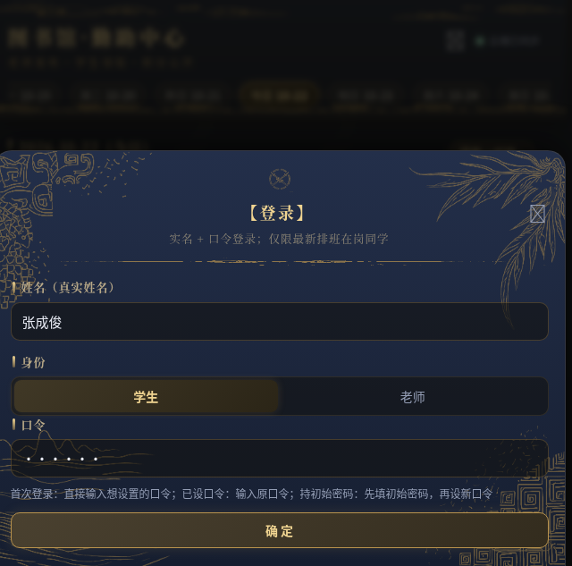
系统会自动识别你的账号属于哪一种：
| 你的情况 | 口令框里填什么 | 接下来会发生 |
|---|---|---|
| 全新同学 从没登录过 |
直接输入你想设置的口令（4-12 位） | 确认后账号立即创建，该口令即为你的专属口令 |
| 持有初始密码 老师下发过 320305 |
先填初始密码 320305 | 弹出【设置口令】窗口 → 输入新口令两遍 → 保存，此后 320305 作废 |
| 已设过口令 老用户 |
输入你自己的口令 | 校验通过直接进入任务榜；输错会提示重试 |
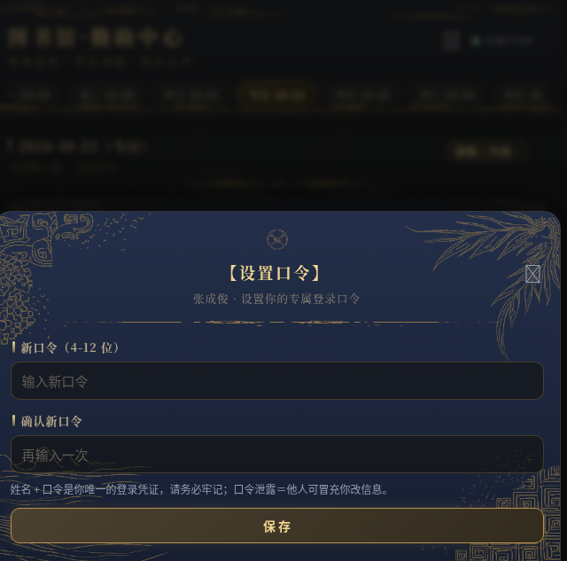
看到「欢迎，×××」提示即进入任务榜主界面。之后每次打开应用都用 姓名 + 口令 登录；在同一台手机上通常保持登录状态，无需重复输入。
从看榜到拿积分的完整闭环，逐个功能说明。
登录后默认进入「任务榜」，一屏看清今天该干什么：
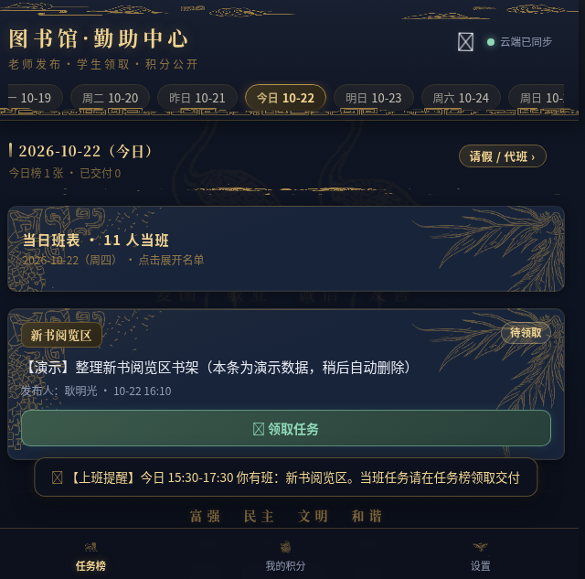
① 日期条：点日期切换查看 ② 当日班表：点开展开名单 ③ 任务卡：馆名 + 状态 + 操作按钮 ④ 底部页签：任务榜 / 我的积分 / 设置点开「当日班表」卡片即可展开名单，看到今天每个阅览室当班的同学——你只能领取自己当班馆的任务；想帮别的馆，走「请假 / 代班」流程。
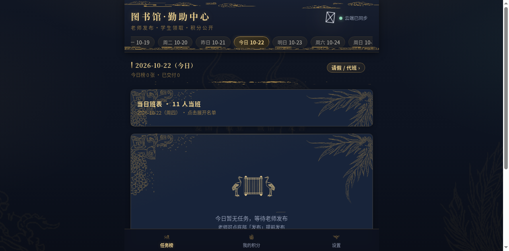
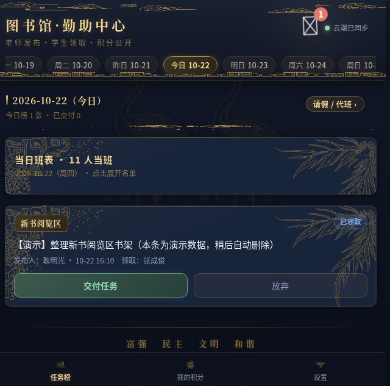
早于 17:00 的交付会标红提醒老师核查，请如实反映现场情况。
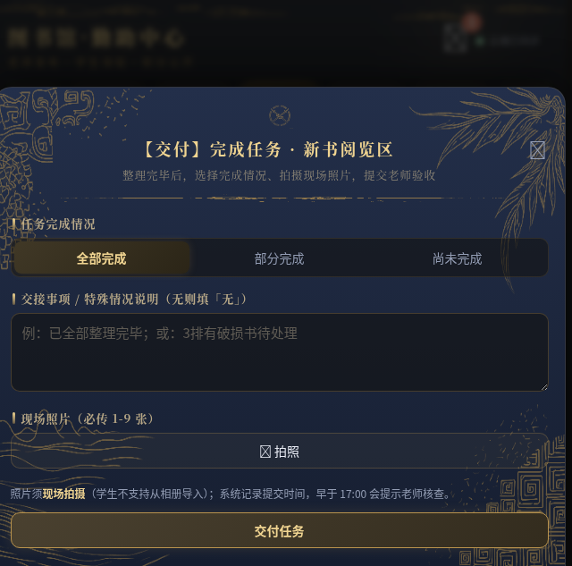
底部切到「我的积分」页：
积分达标会弹出升级邀请，点「升级」播放升级特效。
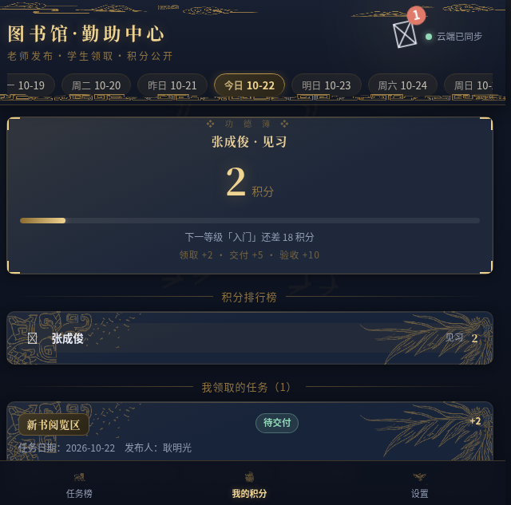
请提前登记，给代班同学留出反应时间。
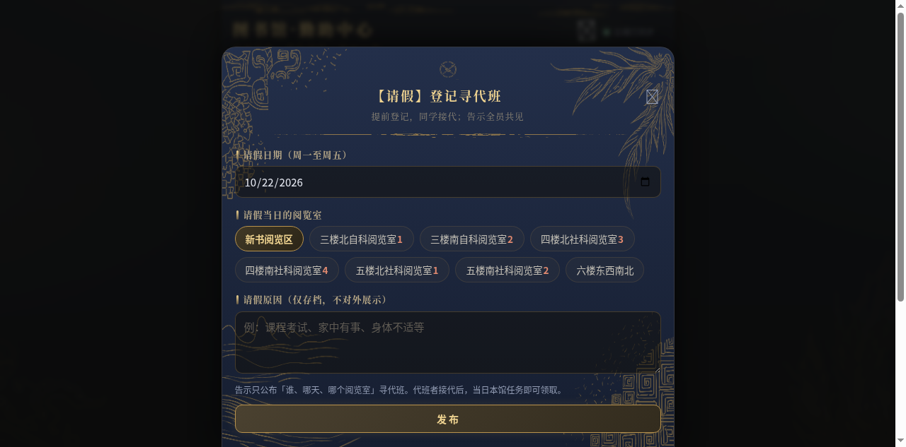
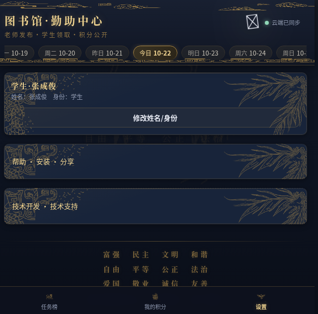
「守正有为」是受限口令：专注发布任务，管理类操作由全功能老师负责。
| 操作 | 守正有为（受限） | 道法自然（全功能） |
|---|---|---|
| 发布整架任务 | ✔ 可以 | ✔ 可以 |
| 验收 / 退回交付 | ✘ 不可以 | ✔ 可以 |
| 删除任务 | ✘ 不可以 | ✔ 可以 |
| 重置学生口令 | ✘ 不可以 | ✔ 可以 |
| 撤回通知 / 导出资料 | ✘ 不可以 | ✔ 可以 |
| 查看积分榜 / 班表 | ✔ 可以 | ✔ 可以 |
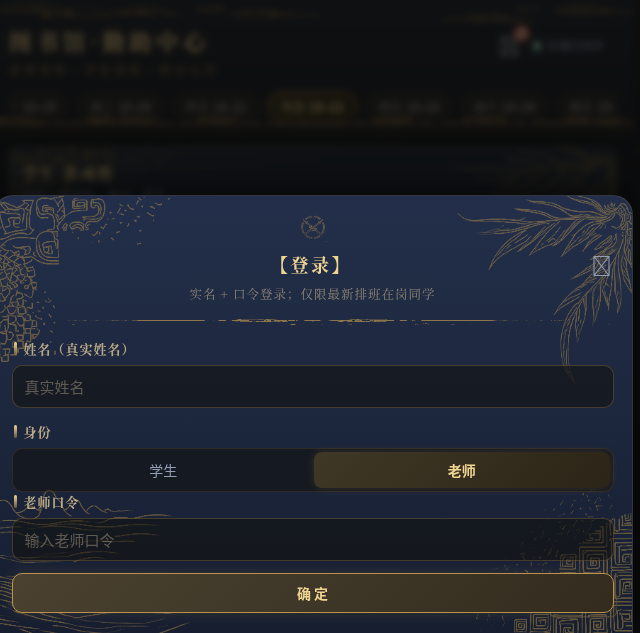
任务卡上没有验收 / 退回 / 删除按钮——这些操作按规则隐藏，避免误触。管理类需求请由全功能老师执行。
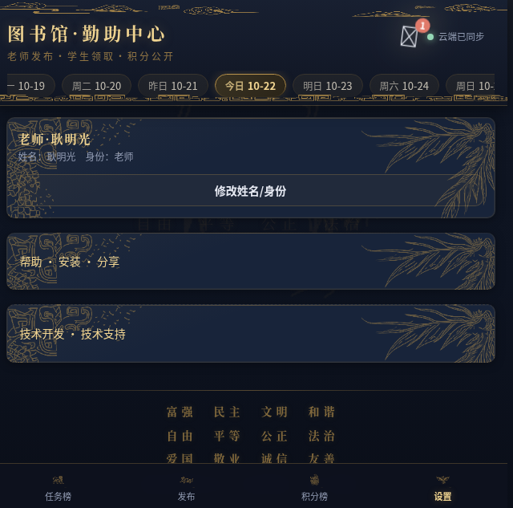
发布前核对日期与馆别；发错任务请联系全功能老师删除。
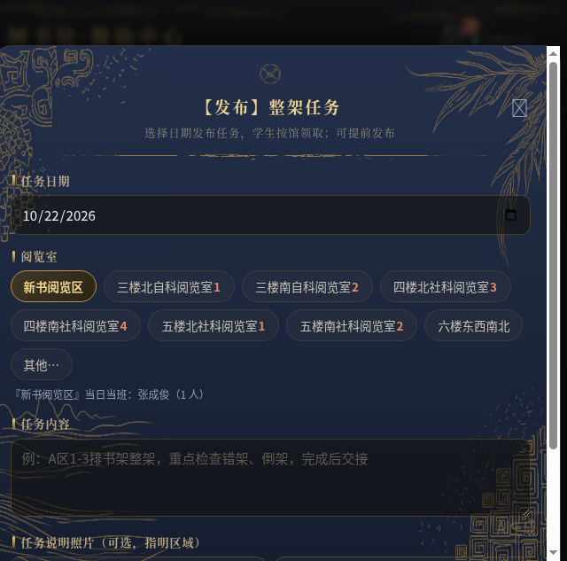
「守正有为」请只发给承担发布职责的人员；「道法自然」是全功能口令，权限大，请谨慎保管。
口令是你账号安全的全部——花 30 秒读完这一节。
· 把口令告诉任何同学（包括组长、室友）
· 设成生日、学号、手机号等容易被猜到的组合
· 在别人的手机上勾选「记住我」后转交对方使用
· 设一个只有自己知道、又不容易忘的口令（如一句话缩写+数字）
· 怀疑泄露时立即请老师重置，重新设置新口令
· 换手机后用 姓名+口令 登录，数据都在云端不丢失
联系全功能老师（口令：道法自然），在「设置 → 学生口令重置」输入你的姓名，把账号重置回初始密码 320305；你再用初始密码登录一次，系统会要求你重新设置自己的口令。
点开问题查看解决办法。
应用问题 / 口令重置 / 排班咨询：请联系图书馆勤助中心值班老师。
技术开发：耿明光 QQ 3428001768
应用内也可反馈：底部「设置」页最下方「技术开发 · 技术支持」卡片内有可直接复制的联系方式。